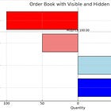

Advanced Market Making
| 항목 | 값 |
|---|---|
| 날짜 | 2025-08-02 |
| 접근 | 유료 |
| URL | https://www.algos.org/p/advanced-market-making |
| 부제 | Step-by-step components of a market making system with advanced elements |
{kind=link}
Introduction
So you want to do market making? Perhaps you’ve seen some screenshots of those double digit Sharpe charts doing huge returns, and want to do something a bit more advanced than a pure arbitrage based approach? Well, you’re in luck. In this article, we’ll break down each component of a proper market making system and how to do it successfully.
There is obviously a large gap between doing it very well on a small exchange and doing it very well on Binance. My definition of successful will lean towards the small exchange definition since if I had alpha on Binance then I’d be making a fortune. I’ve done that in past roles (not with the same team anymore to do it again), and it’s no small feat. We had some of the best latency tech out there, plus a large team and it still took lots of work.
In today’s article, we dig into how to do market making effectively and continue some of the points from the market making for dummies article with more advanced tricks as well as recaps of simpler parts (but with expanded information on how to do them properly that didn’t cross my mind to include when writing the past article).
Index
-
Introduction
-
Index
-
What matters
-
Fair Value
-
Spread
-
Inventory Skew
-
Latency
-
Positional Market Making
-
Arbitrage, Alphas, and PnL
-
Game Theory
-
Order Placement
-
Rewards
-
Being selective of what you quote
What Matters
Let’s start with what actually matters in terms of making more money. There’s a lot of misdirection that happens, especially for those starting out in terms of understanding where you actually make your money.
We will start with short term PnL. This is your PnL when looking at markouts in the range of a couple seconds. A lot of firms in the market making business produce more of their PnL through positional market making, but short term markouts are still very important even if you have a position you want put on. We’ll discuss positional market making later, but for now let’s talk about the short-term components of PnL. This practically all comes down to 3 things:
-
Fair Value
-
Spreads
-
Skewing
They are ranked in terms of their importance, skewing is often focused on as the most important and commonly published research topic in the literature, but in reality it is one of the more trivial aspects of market making.
You also have order placement modifications which in my view matter more than skewing, but we’ll talk about those later since they don’t fit well into our neat model of what the market making problem looks like as a general idea (they’re more of an ad-hoc modification).
Going back to the top of the list, we have our fair value. This is the price we quote around. We start off with a single price we think is the best price to quote around. This is usually some mix of the current price + a prediction of where it will be in the future so that people who also have a good forecast don’t pick us off (trade against us adversely).
The next step, is usually to add our skew based around our positions. We have some aversion to inventory so as a result, we will have some adjustment to our fair value to try and move our inventory towards our desired target (usually 0 if we have no position we are trying to put on).
Finally, we add our spread to the skewed fair value and get our buy/sell quote. Often there will be multiple quoters running different settings for spreads so we will end up with different buy/sell quotes (ie we quote multiple levels on each side of the book).
Fair Value
Fair value is simply a price that when you quote around you get good markouts. Let’s say that after 750ms most of your losses tend to realize on your orders, then you need to roughly quote around the price where you expect the market to be at (future mid-price) in 750ms.
For a simple model, you can quote around Binance’s midprice. If you want to make that even better, you can move onto using a volume weighted mid-price from various top exchanges. Then from there, you can make modifications to that based around which moves you feel are the informed moves, and which moves are noise and won’t affect global fair value. This doesn’t incorporate any forecast (although modifications for moves that will persist is somewhat of a forecast), but it does mean that you have a very good idea of the current market price, which is an important starting point. If you are quoting on a small exchange and think the fair value for BTC is whatever the mid-price is on that small exchange, then you’re already off to a bad start.
To do your forecast, it’s a fairly standard machine learning problem (at the start). Just take a set of features that predict forward price (say 750ms out) and then fit a ridge regression, XGBOOST, OLS (whatever you think is best).
Top of book imbalance, trade volume imbalance, and volatility are all very simple features to get started with. Top of book imbalance is by far the strongest feature, whereas volume imbalance and volatility require being a bit smarter with them to get results. There is a bit of literature on all of these, especially orderbook imbalance.
From here you can start to do more advanced machine learning. Most people think about the forecasting problem as optimizing for R2/MSE/IC of their model fit when in reality most of the moves you are forecasting are ones you will never get filled on so it doesn’t really matter if you’re forecast is good or not. You want to be forecasting conditional on you getting filled. Say you have a 90% accuracy, but on the fills you get, your forecast is wrong 70% of the time, then in reality you only have a 30% accuracy (100% - 70% = 30%) because it doesn’t matter to be right if you don’t get to trade it, and when it comes to market making you don’t get to decide whether you get to trade.
You will often have different forecasts on different timeframes. A very simple way to do this is to just average their markout curves per second. I.e. if you have a 1s forecast with 2 bps of edge and a 30 bps 1 minute forecast then when you average them that’s 0.5 bps per second from the 1 minute forecast and 2 bps per second from your 1s forecast so you should weight the forecast at 20% the 1 minute forecast, and then 80% towards the 1s forecast. This is a bit of an extreme example as 30 bps over 1 minute is absurd, even over an hour is REALLY REALLY good. You’ll also have a much more aggressive view as you’ll expect price to move a lot more for your 1 minute forecast so it’ll make sense that the weighting for it should be very small (a lot smaller than 20%) since the magnitude of it will be MUCH larger. You can then layer this with many forecast horizons (and as we’ll discuss in the position market making section, medium frequency alphas) to form your fair value.
Spreads
The most basic model is to quote some fixed markup on your skewed fair value, say 3 bps, and then call it a day from there on. The next advancement is to add a larger spread based on volatility. You want to be blowing out your spread when the market does.
It is not uncommon that in more advanced firms they will have different fair values associated with each quoter. This is usually because you are thinking about different horizons of being picked off when you quote different depths. If you are quoting to the top of the book then you are probably thinking about getting picked off in the next 100ms, whereas deep levels will be concerned more with longer term forecasts.
From here, you may add modifications to blow out your spread conditional on certain spread specific alphas (i.e. signs in the orderbook that news has been released) OR more generally to avoid events on the event calendar. Often firms will stop quoting around CPI or fed releases. They typically lead to getting picked off by informed traders with fast news feeds.
Skewing
Skewing is fairly simple, you make one side of your quotes wider than the other so that one side will get filled more than the other. This ideally should result in you putting on / taking off inventory and gives you some control over where your inventory is.
Most people think skewing is about “managing inventory risk” when in reality the risk of holding some inventory isn’t actually THAT big a deal. What actually matters is holding on to toxic inventory, and holding on to lots of it. That’s what really sucks. When we skew our quotes we prevent people from loading us up on tons of toxic inventory. Let’s compare two models. One where we just stop quoting one side of the book when we have too much inventory and the other where we skew towards 0.
As a first note, if there’s some net volume imbalance which persists (ie if I’m quoting options on a retail exchange, I’ll be selling options mostly) then you’ll basically sit at your max the entire time. It’s very rare that the net flow is actually 0, so I’ll just pile on inventory and it’ll stay on the whole time because every time I get some off, I’ll put more back on. This sucks in terms of managing our inventory and is why if you get close to having to quote one sided it means you need to make your skew much more aggressive.
But back to my main point, you skew more aggressively when the market is more toxic. If someone wants to put on 50% of my inventory capacity as a position then that’s a pretty aggressive trade and they probably know something I don’t. It would be much better if I only put on a small part of that and then if they wanted to put on the rest my quotes would gradually get wider and wider as I skew more (with each filled quote replacement I make). I’ll give an example from a live trading issue we had to make it a bit clearer:
We were using BTC/ETH correlation to offset each other’s positions, up to some limit. So if I had 1mil of BTC exposure, but -900k of ETH exposure and I was under my netting limit I’d say I only had 100k of BTC exposure and let my BTC book put on more exposure even if its limit was 1mil normally. This ended up causing big pickoffs because whenever there was information that was BTC specific we would get loads of BTC inventory on and get picked off in terms of markouts against the BTC/ETH pairs spread.
Anyways, as a general rule. If it’s super non toxic you shouldn’t skew that aggressively and should just hold some risk. Even if there is a net imbalance, you can absorb some of it because it’s probably not an informed imbalance. If it’s a toxic exchange like Binance - then there’s probably a good reason for that imbalance and you will get picked off if you let someone load you up on inventory.
The more aggressive someone becomes, the more likely they are to be a toxic player so you widen your spreads gradually in accordance with their impacts, but of course this doesn’t apply in non toxic markets where you know they’re basically all non-toxic and this super aggressive player is probably just an idiot who wants size.
You don’t need a complex model for skewing. You should roughly follow:
-
Have a global skew across all exchanges
-
A local skew for each exchange specifically
Latency
Latency is one of the ways you can increase the performance of your market making system. Often times having a very fast feed for multiple exchange’s prices and the ability to modify your orders on exchange quickly is all you need to be profitable on some smaller exchanges. It isn’t always the case, but it can be the make or break for a lot of systems. Unless you are trading really strong, and fairly longer term (on market making timescales) alphas then you are probably going to lose money quoting on a competitive exchange with high latency.
I won’t talk specifically about how to optimize the latency, but you can start by programming your system in a low level language. Whilst a lot of the latency is on the wire in crypto (ie network latency), there is a huge spike in messages when you will want to trade (or adjust your quotes). If you don’t have a fast system that can process tons of messages at once then your tail latency will spike. Your tail latency is the main latency to care about when it comes to market making because your tail latency is usually the latency you get when updating your quotes matter (and when you get the markouts that cost you lots of money).
Latency as an edge itself is fairly winner takes all and also tends to be more of an SWE problem than a research problem. That said it’s more of an “SWE research” setup since you will have your SWE’s researching ways to improve latency. Past a certain point you do have to improve other parts of the system because latency will eventually start to have marginally diminishing returns on how it affects strategy performance.
Positional Market Making
You may have heard about the concept of market making into more medium frequency alphas before, or perhaps it is new to you, but it is one of the key ideas of how a lot of market makers generate their PnL. The best market makers are able to execute positions at effectively 0 cost, and often are able to put on size in small cap names. For those familiar with trading medium frequency alphas, you can probably already see where this is going…
Having 0 cost to trade makes it very easy to find edge all of a sudden and being able to put on size in small names without having absurd costs is extremely profitable. You will find that if you increase the size of your universe, the same alphas will start performing much much better, but this is only because the small caps tend to have more edge. It’s an efficient trade-off in a way since these smaller names lack the size to make real money with, but when you have advanced MM systems that the likes of Jump have then this becomes a bit of a different story.
One of the main ways these top names make their money is not just on the HFT book but by having 1000 or so alphas and skewing into each of them (and ensembling all these skews). Literally just backtest a ranking based strategy of 1h return * -1 and see how well it does with no fees (it does incredibly well but the bps on volume is extremely low so you need no fees!), now imagine you can find lots of these and you start to piece together how this PnL gets generated.
It’s not the whole story, you still need to be very very good at market making to pull this off, otherwise you are just a medium frequency shop with decent execution and not an HFT shop that is milking the fact that they can execute and insanely low costs.
There is still a “cost to disagree with the market”, you will find that the market making bps on volume is better than the positional bps on volume. This is because you do more skewing when you are trying to put on a position and then take it off later as opposed to trying to remain at zero inventory. Skewing is effectively the same thing as disagreeing with the market and this makes you earn less than the market reward. If you’d normally quote 3 bps but you had to tighten up to 2 bps on one side (the side you’re getting filled on much more as you put this position on) then now you are earning 1 bps less than normal. So you do lose out on some spread when you skew into positions and there will be some “cost” relative to your normal market making PnL. Ie if I normally make 2 bps doing my usual MM, I might be at 0.5 bps of loss when skewing into positions. It of course will depend on how aggressive that skewing is which in turn depends on how quickly your signals decay (how much aggression in warranted).
Arbitrage, Alphas, & PnL
Doing arbitrage and market making, they’re different right? Well not quite so… Say I quote around the Binance mid-price on another exchange which often falls out of line with Binance, then one side of my quotes will be aggressive when the other exchange diverges from Binance and we will pick up inventory that bets on the convergence. This is actually the final form of arbitrage as it is the lowest cost way to pull off an arbitrage (no hedge leg cost, and full maker).
You can even mimic this as a taker by having quotes that you do not post and when the book is past your internal quotes you end up taking. Ie if my price is $5 and the price goes to $4.99, I’ll pick up inventory at $4.99 as a taker. You still avoid having a hedge leg and it’s fairly effective.
The main problem to solve is ensuring you do not get picked off from other alphas when you are posting your quotes (it’s not all arbitrages), and making sure that you are skewing in a way that you don’t take off the position before convergence.
Regardless, you will basically always use arbitrage as part of your alpha model as a market maker since other exchanges quotes will be used to form your global fair value, and you then may even make local adjustments to consider the lead-lag relationship between your small exchange and the global fair value (ie will this take ages to converge and isn’t worth it so perhaps I don’t quote as aggressively towards global fair because I don’t want to sit on inventory or shall I pick up this position aggressively since it’ll converge soon).
This mostly applies to quoting on smaller exchanges. If you find an exchange where there are lots of arbitrages, a really smart way to capture them is to simply start market making and post your quotes such that you are only trying to capture arbitrage differences. It’s just a little less explicit in terms of how you capture it.
So when you hear people say “just quote around Binance mid on a crappy exchange” what they are really saying is “just do full maker arbitrage against Binance”.
Game Theory
In market making, there are often elements of game theory where you need to predict how others will behave and adapt to it. Oftentimes that means not poking the bear too much.
I’ll give an example, often when you are taking, there will be people who quote a fairly relaxed amount of skew because it’s a small exchange and they expect that it’ll be almost entirely retail flow. I won’t name names but there is a certain market maker where if you pick them off too much they switch on the smart quoter which you will never be able to pick off, but if they don’t get picked off too much they’ll stick with the retail quoter. This is because they want to meet exchange obligations and keep liquidity provision stats looking nice (plus when it’s non toxic you actually dont mind having inventory that much). So keeping your PnL under a threshold is actually to your own benefit in this case.
Another example is where you can get into a bidding war if you bid too close to someone when trying to make into an arbitrage and then you end up eating away all of the profit. This is something I’ll talk about in the order placement section.
There’s also signalling about when you have a position you want off. This is especially relevant for OTC players who will try to not let the market know they have a big position on when they are trying to take it off. A very basic example of this is trying to avoid price improvement or taking and only making. If a maker switches to taking or is price improving aggressively it will reveal their position to the market, whereas if they just stick the other quote they have super wide and effectively are quoting one sided then people notice the difference less. Especially if you push your order you don’t want filled just under a certain number of bps (say 5 bps) since people will monitor the density in terms of buckets so if you move from 3.01 bps to 4.99 bps then their bucket for 3-5bps of liquidity depth will remain the same but you’ve significantly decreased your chances of getting a fill. This sort of logic is important when hiding flows. In options, this often happens where people will rotate which part of the curve they are aggressive on when they are trying to take off a position. If they are aggressive on the whole curve then people will know and the curve will reprice but if they are aggressive only on some smaller fraction of the curve, and rotate that about at random then it will blend in much easier.
Order Placement
Once you have the levels you want to place at due to your skew, spread, and fair value then you often make ad-hoc modifications. There are 3 reasons you do this:
-
To eke out a little bit more edge for very little change in fill probability.
-
To improve your markouts.
-
To hide your flow.
We have talked about #3 already in the game theory section. With diming logic we effectively 1-up the other person, I talk about this in a fair bit of detail in my Market Making For Dummies article, and even provide code:

But at a more advanced level, you should be taking the average density over the course of multiple minutes and trying to find the optimal spot to place. For large scale quoting, you won’t have the rate limit to be one-upping people so you only really want to be making these modifications fairly infrequently. You also will want to do a bit more of a complex analysis by trading off size vs tightness. Have some weighting for skipping in front of density compared to the aggression increase and you’ll find the optimal density.
Finally, and most importantly, you often need to do this to improve your markouts. If you place in front of a large order then you are far less likely to get a bad markout because even if they fill you they are fairly unlikely to be able to fully fill the large order behind you and push the price against you. In this way, that large order protects you. That said, spoofing is real in crypto and you need to develop logic to determine which orders are sturdy and won’t disappear quickly. When large orders go missing, the price will suddenly take a turn for where the order was because the book pressure has shifted quite aggressively by removing that order. So if you have an order that is likely to be spoofed then you can have the opposite effect by trying to follow it around (and it’s removal will mean that this level gets run over).
Rewards
Whilst I often talk about how arbitrage opportunities and non-toxic flows are the main attraction when going to small / newer exchanges (especially newer exchanges, a lot of small exchanges are all bots fighting each other), there is also rewards. Rewards can often be 10x your trading PnL and make it extremely profitable to farm them. You will see people quoting prices that don’t make sense and are extremely tight, often tighter than the reference exchange (Binance, Okex, etc), but this is because they are incorporating the rewards they earn from quoting size into their spread.
There doesn’t tend to be as much of a reward program for takers (although if you find them then milk the crap out of them because they are great), but the maker program often makes the quotes artificially tight and the requirements to stay on the top of the book to earn rewards discourages skewing too much so you’ll often be able to take against them and put on arbitrage positions at very very reasonable costs. Maker reward programs bleed through into money on the taker side as an arbitrage player (although I’d argue the big money is still on the maker side of things so focus on that if you can get a solid quoter up).
Being selective of what you quote
When you suck at quoting, sometimes you need to be selective about what you quote. Before you put some quotes down in the book and have your own markouts to rely on, you can use the average markout (say over 5 seconds) of every single trade that happens on that instrument (or even exchange) and track the EWMA of that over time. You’ll notice that the ones that sustain a really great set of markouts are the super non-toxic pairs (usually stablecoin pairs like USDC/USDT which are easy to quote). Dynamic selection of what to quote and only quoting when you have edge is a good way to turn a system that lacks edge into a profitable or flat curve. That said, you do still need edge and you will find it hard to trade anything with volume if you are being very selective due to a lack of edge. Even the easy stuff on Binance still requires good quoting to make money on.
On a note of being selective about how you quote, sizing is usually just a fixed size for each instrument, but one advanced trick is to scale your sizing based on your markouts for that symbol so that you are quoting more size on the names that you are making money on. Markouts are fairly responsive as well, so you will be sizing down very quickly when you start losing money. If you tune this well you can improve your PnL quite a lot.